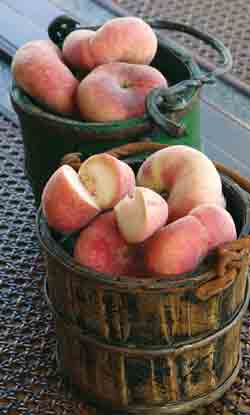

Most peaches found in the United States have yellow flesh, but manywhite-flesh peaches are starting to show up in our grocery stores,too. William Woys Weaver, a Mother Earth News contributingeditor and author of100 Vegetables and Where They Came From, thinks ?Saturn'peaches are among the very best of the white-flesh varieties.?Saturn' peaches have an unusually flat shape, and are named fortheir resemblance to the rings of Saturn. They're also called'Donut' or ?Doughnut' peaches. In fact, many supermarkets packagethe flat peaches in long boxes like those used for doughnuts, andmarket them as a good-for-you snack food.
So what's so great about ?Saturn' peaches?
1. They taste better than other peaches. They're sweeter, withalmond overtones.
2. They are lower in acid than other peaches.
3. The pit doesn't cling to the flesh, so it's easy to pop out withyour thumb.
4. The fruit's thin, red skin has little or no fuzz, so it doesn'thave to be peeled.
5. Their small size lends itself to being eaten out of hand.
6. The frost-hardy, highly pest- and disease-resistant trees areeasy to grow in most areas.
7. You can count on ?Saturn' peach trees to produce an abundantharvest ? up to twice as many peaches as other varieties.
8. The trees bloom earlier in the spring than other varieties, andput on an absolutely spectacular show of pink blossoms.
9. Most of the nursery stock is now grafted to dwarf roots, makingeasy work of pruning and harvesting.
10. By planting a rarer variety of peach, you are helping topreserve biodiversity and maintain diverse seed stocks forgenerations to come.
Peaches are easy for home gardeners to grow. The followingmail-order nurseries offer bare-root ?Saturn' peach trees. Plan toorder them in the winter for early spring planting.
|
 |
|
|